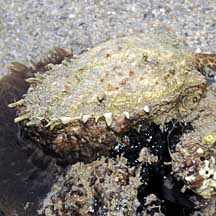
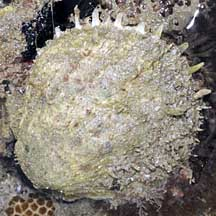
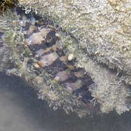

|
|
| bivalves text index | photo index |
| Phylum Mollusca > Class Bivalvia |
| Thorny
oyster Spondylus sp.* Family Spondylidae updated May 2020 Where seen? This rather large clam with spikes is sometimes seen near reefs, stuck to rocks or dead corals. It is not a true oyster, which belong to Family Ostreidae. Features: 8-10cm. The two-part shell is thick and heavy. The lower (right) valve is cemented very firmly to the hard surface and is more convex (like a cup). The upper (left) valve is rather flat, like a lid, and covered with flat short spines. The animal has short tentacles and eyes at the margin of the body mantle. What do they eat? Like most other bivalves, it is a filter feeder. When submerged, it opens its valves slightly and sucks in a current of water. It uses its enlarged gills to sieve food particles out of this current. When the tide goes out, it clamps up the valves tightly to prevent water loss. Human uses: Collected for for food and the shell trade by coastal dwellers. Their shells may also be used in shellcraft or to make lime. |
 Pulau Berkas, Jan 10 |
 Pulau Berkas, Jan 10 |
 Mantle revealed in this submerged clam. Tanah Merah, Dec 10 |
*Species are difficult to positively identify without close examination.
On this website, they are grouped by external features for convenience of display.
| Thorny oysters on Singapore shores |
On wildsingapore
flickr
|
| Other sightings on Singapore shores |
| Family
Spondylidae recorded for Singapore from Tan Siong Kiat and Henrietta P. M. Woo, 2010 Preliminary Checklist of The Molluscs of Singapore.
|
Links
|